dawn
clock radio
What's the first thing you did this morning? You probably picked up your phone. Dawn is a wooden clock radio designed to take its place — it shows the time, lets you explore the airwaves, and wakes you with local community radio, all through one rotary dial. No notifications, no feeds; just a local voice and the sounds of your city waking up with you.
& UX
2025–26
UT Austin
Figma · Wood
one dial.
no feeds.
Taking cues from Teenage Engineering's Playdate and Apple's iPod click wheel, the challenge I set was deliberately strict: everything Dawn does is controlled through a single rotary dial. The constraint forced clarity — the device can only do what one hand, one motion can express.
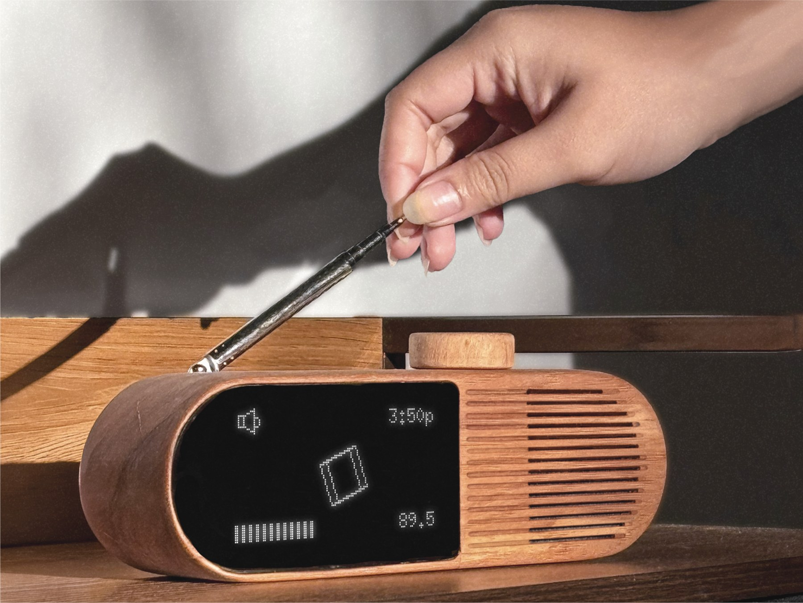
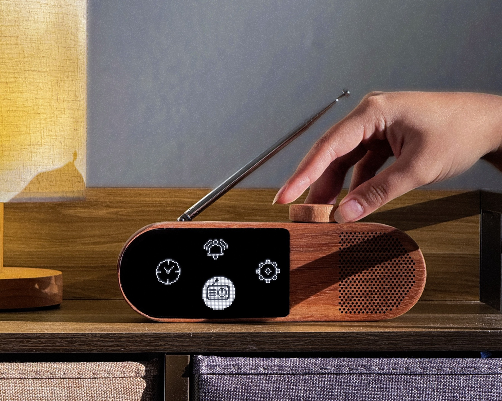
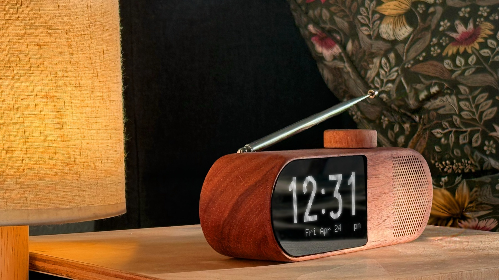
fm radio is live and passive,
you tune in and something is already happening
it builds a greater sense of active community.
from cylinder
to pill.
I prototyped in cardboard before anything else. Early cylindrical forms looked clean but failed in the hand — you couldn't hold the body and work the dial one-handed. Iterating on the silhouette led to a compact, pill-shaped form that sits naturally under the fingers.
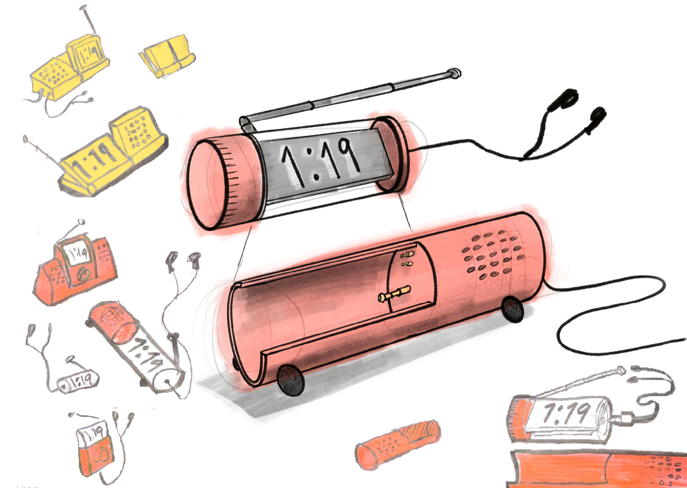
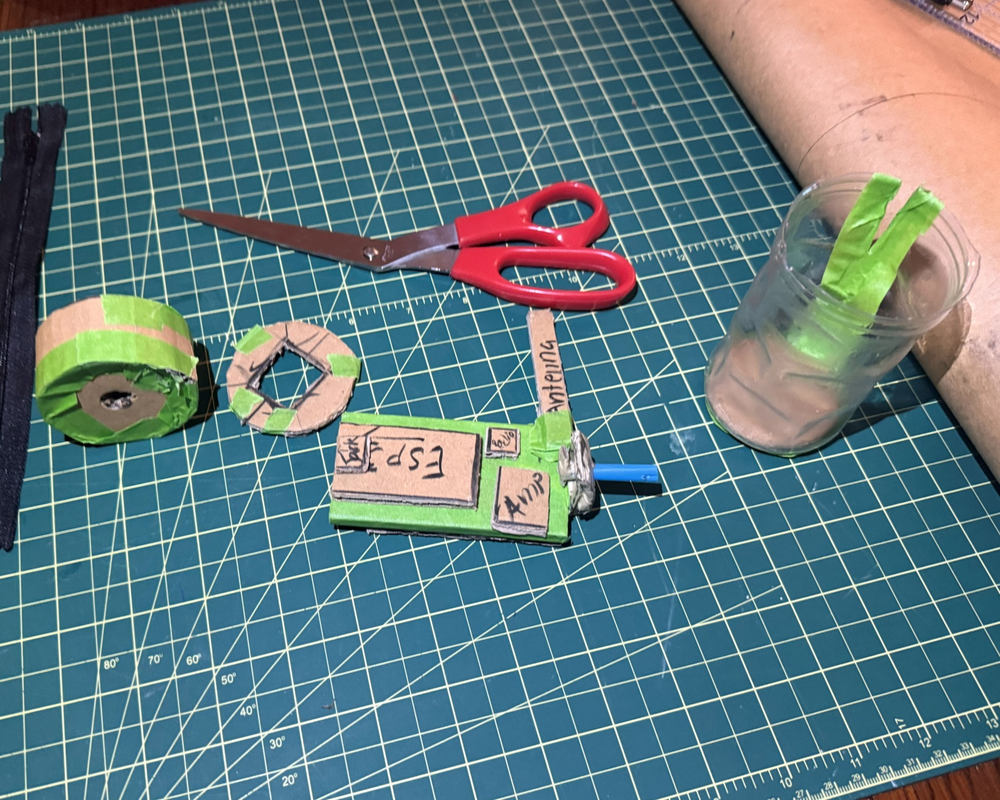
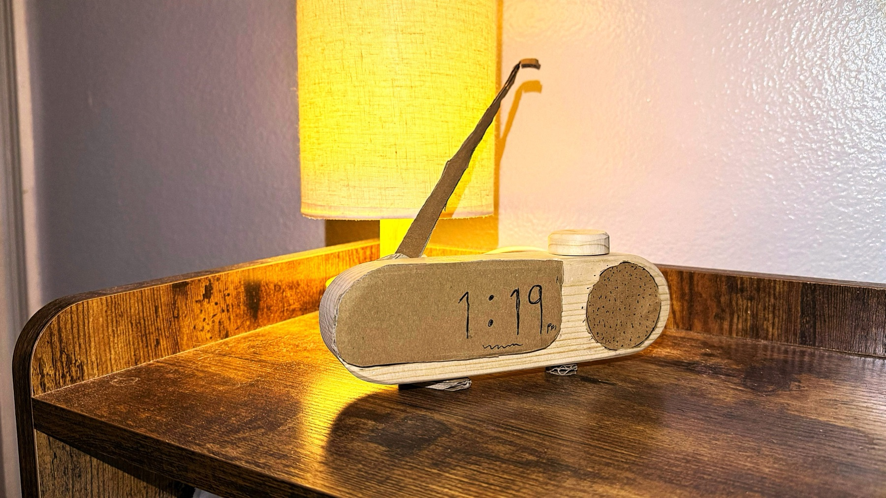
wood was a functional choice.
Wood started as an aesthetic instinct and turned out to be essential: the resonant warmth it gives the dial's click is part of the product's character. Each of the three housings has a laser-cut faceplate, a hand-shaped body, 3D-printed internal brackets and a dark acrylic screen.
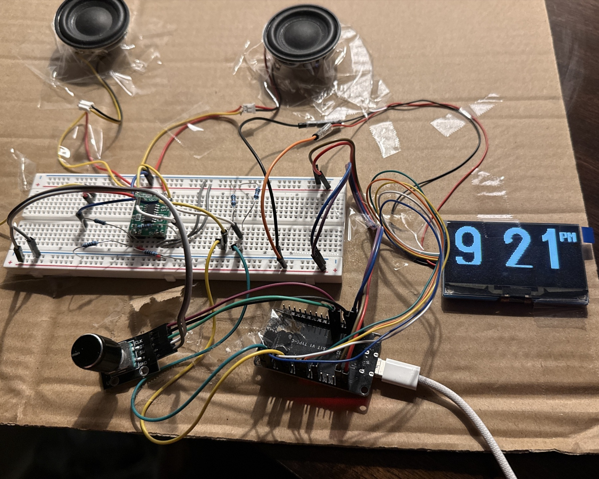
a board built from scratch.
To reach the compact form, I designed a custom PCB in KiCad that unifies every component on a single board — removing the wiring constraints that would otherwise dictate the size and shape of the enclosure.
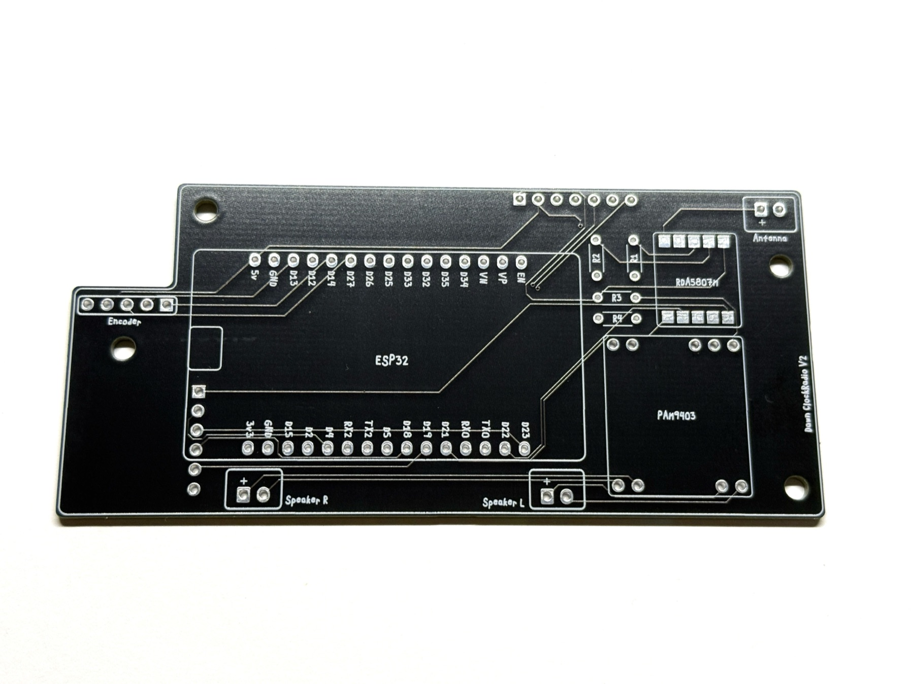
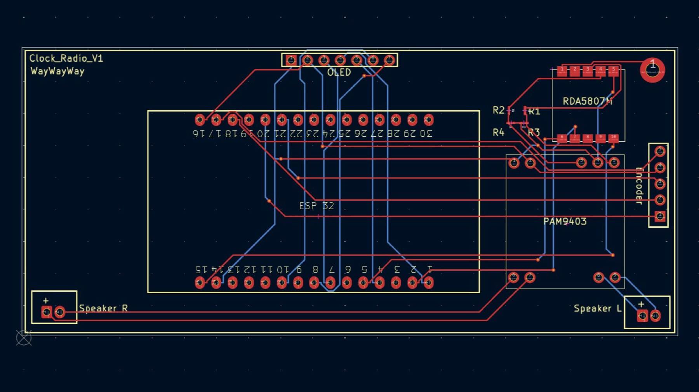
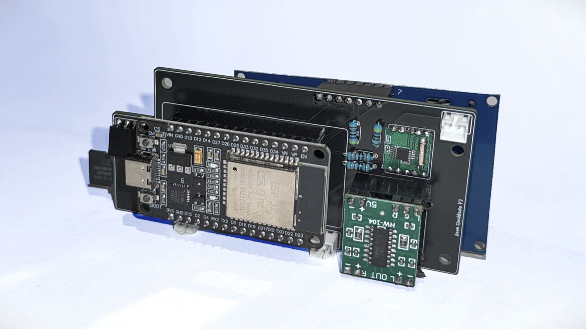
four screens,
three gestures.
The whole interface — clock, radio, alarm and settings — maps to just three inputs on the dial: rotate, press, and double-press. A contextual gesture language, carried by smooth animation, keeps that small vocabulary legible across every screen.
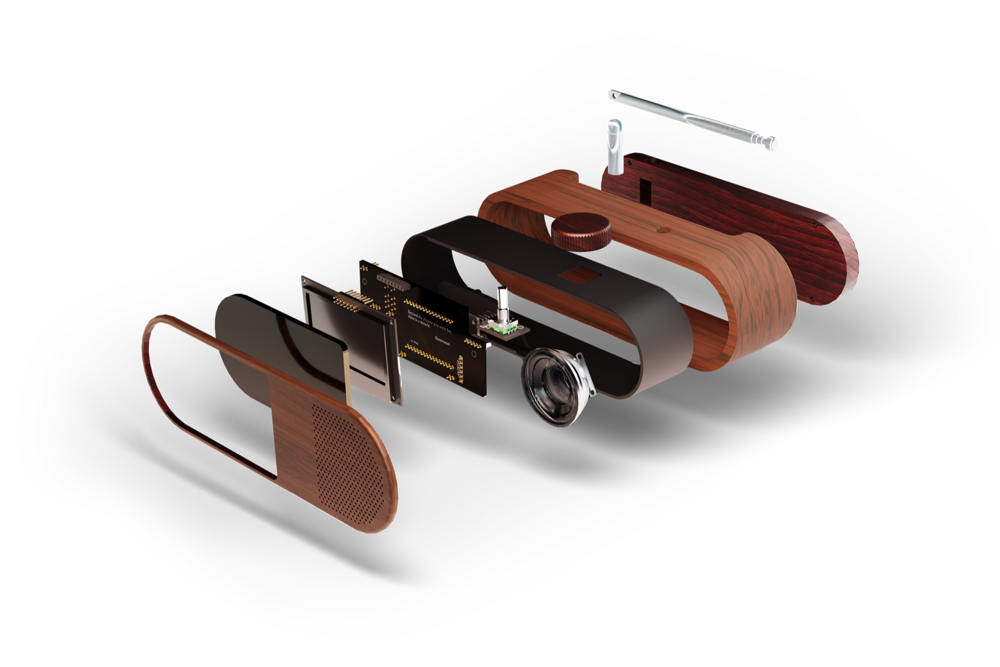
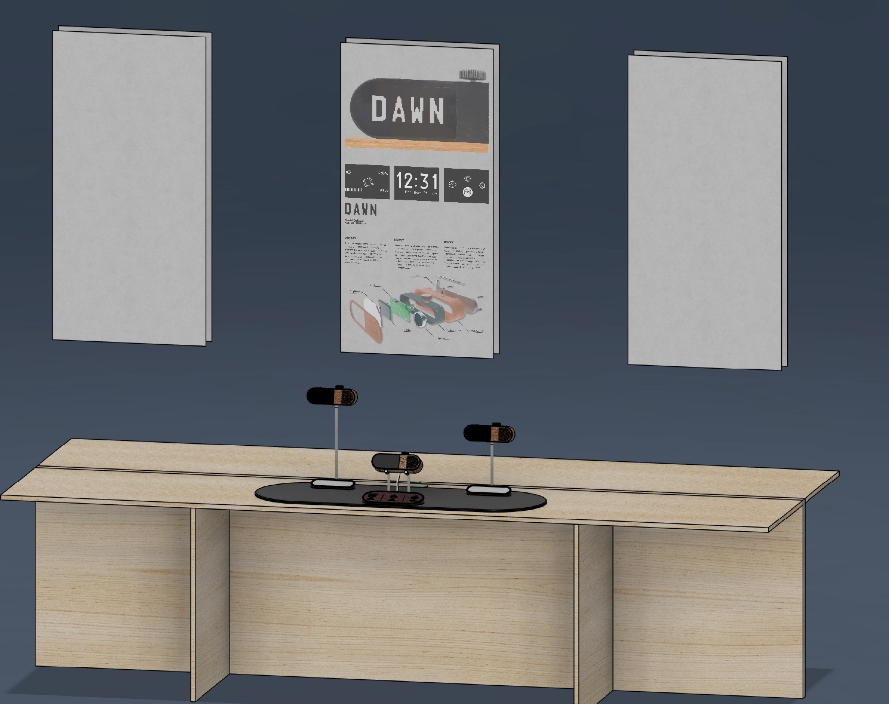
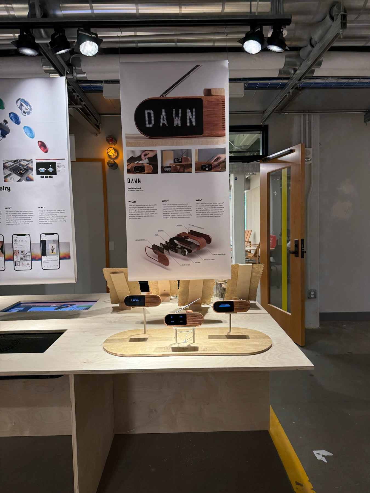
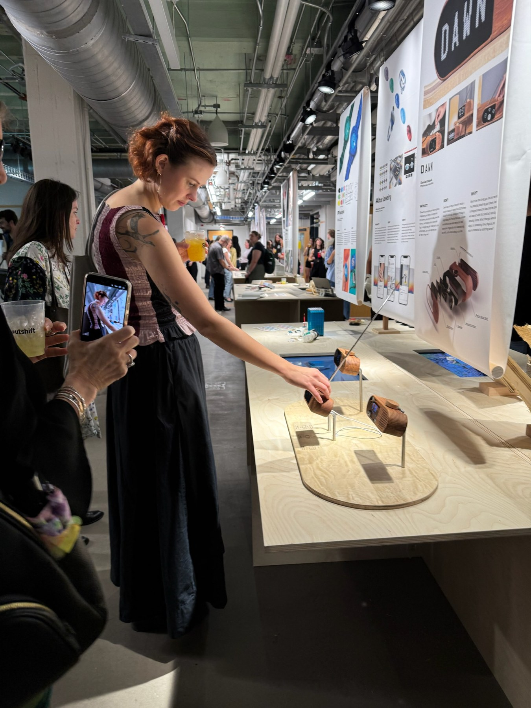